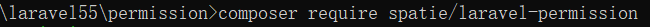

a.依赖管理工具,框架,环境
1.composer
2.laravel(我的是5.5)
3.PHP(我的7.2),MySql(我的5.7)
b,安装
1.首先需要安装一个干净的 Laravel 项目，然后在项目根目录下通过 Composer 来安装扩展包依赖：
composer create-project laravel/laravel permission --prefer-dist
2.进入安装完时生成的文件夹
cd permission
执行以下命令
composer require spatie/laravel-permission

如:遇到了错误:不让下载,打开失败,
不着急切换一下国内镜像然后就可以下载了 composer config -g repo.packagist composer https://packagist.phpcomposer.com
3.将扩展包提供的数据库迁移文件发布到 database/migrations 目录下：
php artisan vendor:publish --provider="Spatie\Permission\PermissionServiceProvider" --tag="migrations"
4.然后迁移文件生成数据表
php artisan migrate
如:遇到错误!!拒绝访问
不急首先检查database.php中自己填写的信息是正确的,然后检查.env文件,完事!
5.配置文件
接下来将扩展包提供的权限配置文件 permission.php 发布到 config 目录下以便对默认配置进行修改：
php artisan vendor:publish --provider="Spatie\Permission\PermissionServiceProvider" --tag="config"
6.恭喜你已经完成了基本操作接下来走传送门:
基于 Laravel Permission 扩展包在项目中轻松实现 RBAC 权限管理功能:
https://laravelacademy.org/post/9389.html
报错时参考的以下文章:
ERROR切换镜像:https://pkg.phpcomposer.com/
ERROR拒绝访问:https://www.bbsmax.com/A/QW5Y8DNJma/